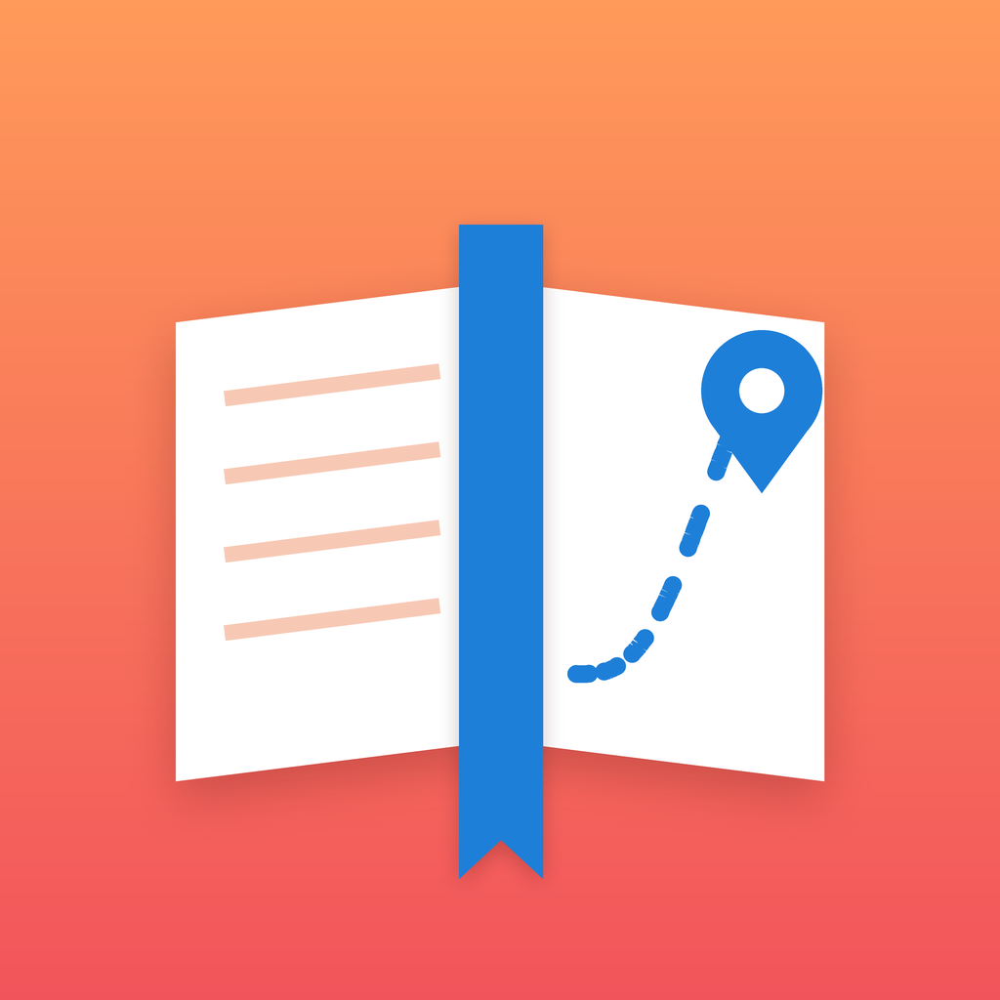

旅ナビ
サポート
旅ナビは、出発地と目的地、人数を入れるだけで、移動手段・交通費・宿・観光ルート・ご当地グルメまで入った「旅のしおり」を自動で作るiPhoneアプリです。
よくある質問
料金は正確ですか?
交通費・入場料・食費は距離や相場から計算した目安です。宿泊費は、楽天トラベルの最安料金(素泊まりの想定)か、宿の種類からの目安で計算しています。予約の前に、必ず各事業者の最新の料金をご確認ください。
実際の宿の料金を反映したい
しおりの「泊まる場所」で「料金を入力」を選び、予約サイトで調べた1泊あたりの金額(全員分)を入れると、合計に反映されます。
観光地を入れ替えたい
予定の「…」から「ここを外す」を選ぶと、次のおすすめが自動で入ります。「観光地を追加・入れ替える」から候補を選ぶこともできます。
「PR」と書かれたリンクは何ですか?
楽天トラベルの宿泊施設ページへのアフィリエイトリンク(広告)です。リンク先で予約されると、運営者が紹介料を受け取ることがあります。利用者の料金は変わりません。
個人情報は送信されますか?
作ったしおりは端末内だけに保存され、運営者には送信されません。現在地も取得しません。詳しくはプライバシーポリシーをご覧ください。
データの提供元
地図・地名・観光地・飲食店の検索:Apple マップ
宿泊施設の情報・料金・写真:楽天トラベル
観光地の写真:Wikimedia Commons(撮影者とライセンスは各写真に表示)
写真がない場所の航空写真:Apple マップ
Supported by Rakuten Developers
お問い合わせ
四井友偉